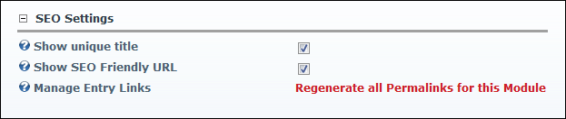

Configuring Blog Search Engine Optimization Settings
How to configure settings related to Search Engine Optimization for the Blog module.
- Select Module Options from the View_Blog module actions menu.
- Go to the SEO Settings section.
- At Show Unique Title, to display the blog title in the Web browser - OR - to display the page title.
- At Show SEO Friendly URL, select from these options:
- Mark
 the check box to show search engine friendly URL's. This modifies the URL to replace default.aspx with the title of the blog entry as follows: .../Blog-Entry-Title.aspx. This URL format can help with search engine optimization.
the check box to show search engine friendly URL's. This modifies the URL to replace default.aspx with the title of the blog entry as follows: .../Blog-Entry-Title.aspx. This URL format can help with search engine optimization. - Unmark
 the check box to disable.
the check box to disable.
- At Manage Entry Links, click the Regenerate all Permalinks for this Module link. You would typically perform this task after a change has been made to the URL format for a site.

-
Click the Update button.